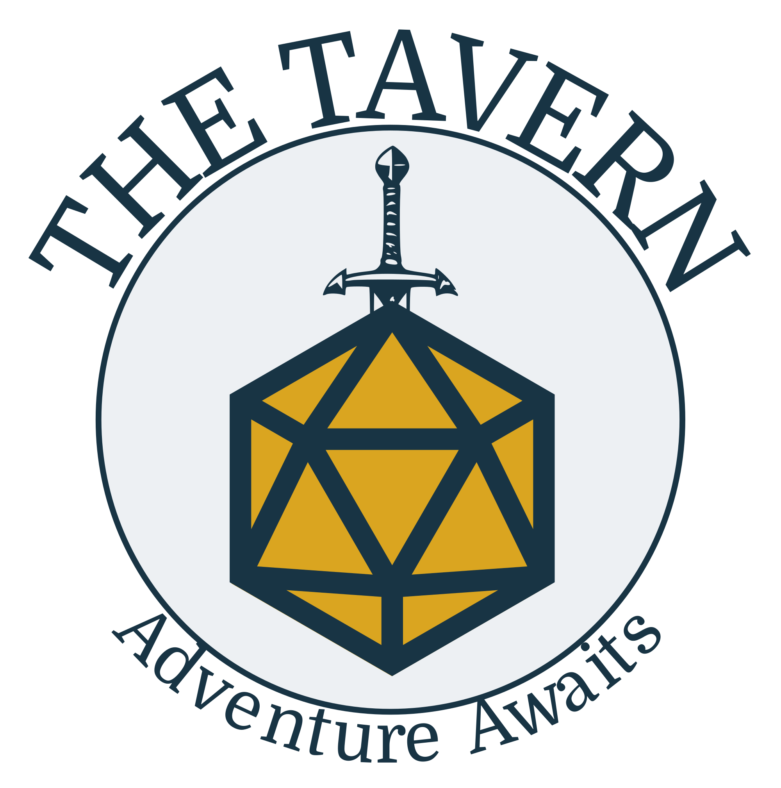
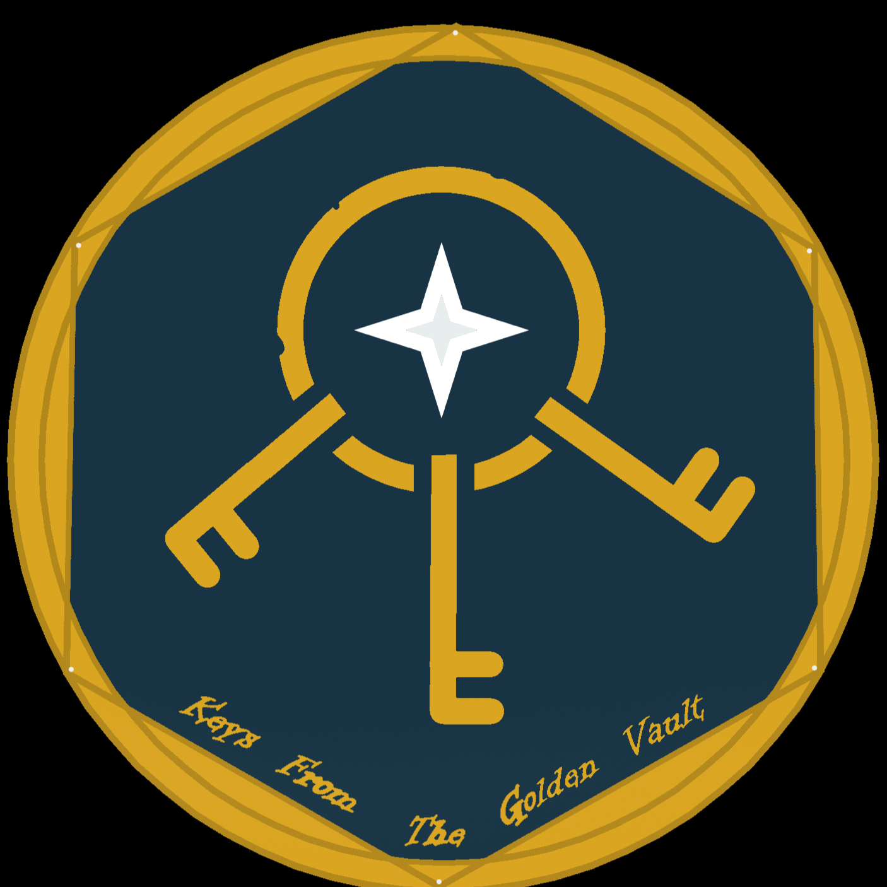
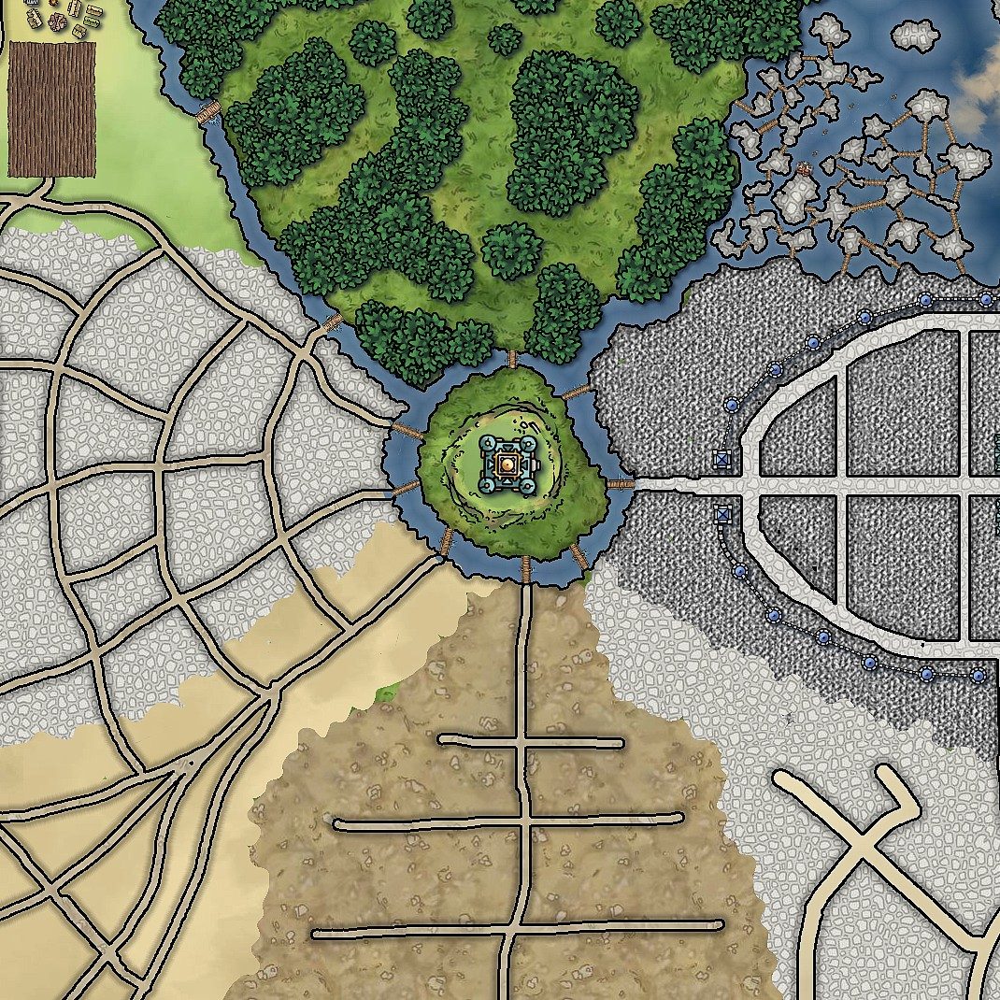

Campaigns
Keys from the Golden Vault
Keys from the Golden Vault is an anthology of heist-based adventures from Wizards of the Coast. The adventurers are hired by an anti-corruption group known as the Golden Vault, who use clandestine means to bring about good in the world. The heroes will plan and pull off a series of operations, in everything from an Ocean’s-style casino heist to a classic train heist. Both the wits of the players and the characters will be put to the test as they race against the clock to stop a mysterious group moving against them from the shadows.
Each mission presents a new location, new allies, and new challenges that require careful planning and teamwork. Players will need to gather information, scout locations, create clever strategies, and adapt when plans inevitably go wrong. Sometimes success will depend on stealth and deception, while other times the heroes may find themselves forced into a daring escape or last-minute improvisation. The campaign focuses heavily on player creativity, allowing multiple possible approaches to each job. Whether the group prefers disguises, gadgets, magic, or brute force, every plan has the potential to succeed if it is executed well.
Because each adventure is part of an anthology, the missions can vary widely in tone and style. One week the party might be infiltrating a heavily guarded vault in a bustling city, and the next they might be sneaking onto a moving vehicle or breaking into a secret stronghold. These changing scenarios help keep the campaign fresh and encourage players to think in new ways every session.

The Legacy of Peridos
Peridos is a collection of neighboring city states united under a small council. This council is devoted to protecting the people from any threats that may arise. However, they find themselves reliant upon the adventurers for the defense of the kingdom when an ancient evil arises again, and a massive network of interconnected dungeons open beneath the cities. The heroes must dive into the network to stop the threat before it arises.
Unlike the heist-focused adventures of the Golden Vault, Legacy of Peridos is a more traditional long-form campaign centered around exploration, discovery, and the unfolding of a larger story. As the players explore the underground dungeon network, they will uncover lost ruins, strange creatures, and clues about the forgotten history of the region. Each discovery may reveal more about the ancient evil awakening beneath the cities and the forces working to bring it back.
The cities of Peridos themselves will also play a major role in the story. Players may build relationships with important figures, earn the trust of different factions, and influence how the council responds to the growing threat. Their decisions may affect the safety of entire districts, and their successes or failures could determine whether the cities remain united or fall into chaos. Over time, the characters will become key defenders of the realm as they grow stronger and uncover the truth behind the rising danger.

About
The website exists to provide information on any of the above campaigns, and to answer any questions players may have. It will provide player tools and table rules so that players can reference them quickly. It will also be a place for me to help the players keep track of everything they may need. In addition to campaign summaries, the site will eventually include resources such as character information, house rules, session notes, and helpful reminders for players.
These tools are designed to make it easier for everyone at the table to stay organized and focused on the adventure. Instead of searching through old notes or messages, players will be able to quickly check the website for important details about the world, their objectives, or upcoming sessions. As more campaigns are played, the Tavern will continue to grow. New adventures, new worlds, and new stories will be added over time, turning the site into a hub for every campaign run here. Whether you are a current player looking for information or a future adventurer preparing for your first quest, this page will serve as the central gathering place for all of the stories told at the table.